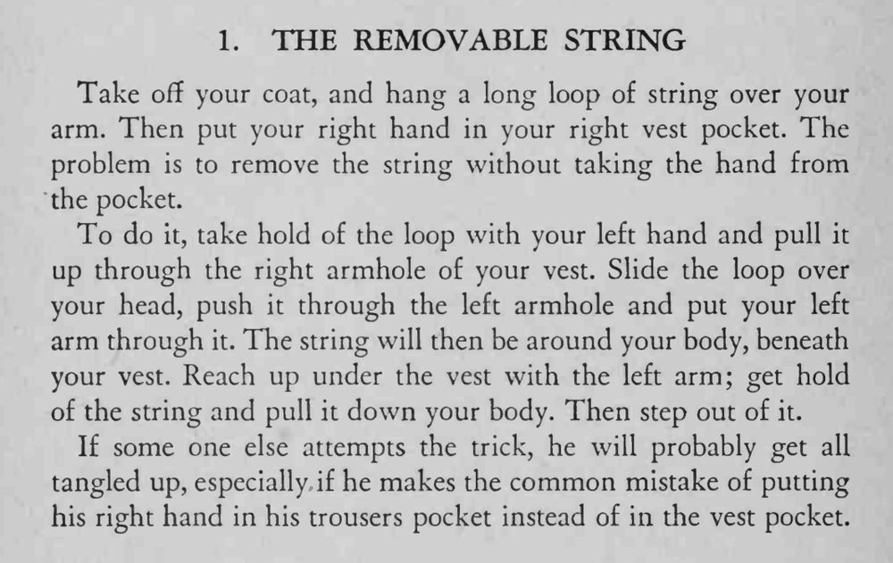

魔术师脱下外套、右手插进马甲口袋，一只手臂不能动，却把搭在臂上的绳圈从身上完整取了下来。
右手一定要插马甲口袋而不是裤兜，否则绳子会缠成一团。

Take off your coat, and hang a long loop of string over your arm. Then put your right hand in your right vest pocket. The problem is to remove the string without taking the hand from the pocket. To do it, take hold of the loop with your left hand and pull it up through the right armhole of your vest. Slide the loop over your head, push it through the left armhole and put your left arm through it. The string will then be around your body, beneath your vest. Reach up under the vest with the left arm; get hold of the string and pull it down your body. Then step out of it. If some one else attempts the trick, he will probably get all tangled up, especially if he makes the common mistake of putting his right hand in his trousers pocket instead of in the vest pocket.